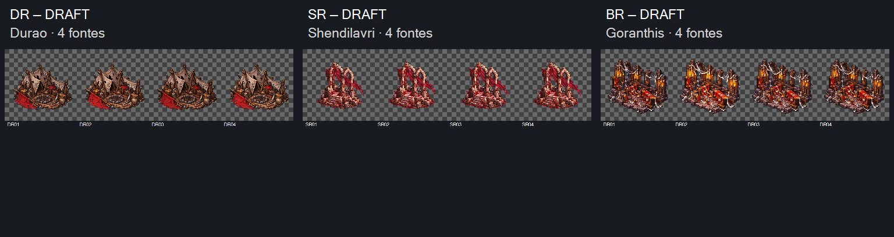

DRAFT — direção visual aceita em2026-10-16. Durao DR01..04, Shendilavri SR01..04 e Goranthis BR01..04, todasv01.12tentativas, uma por arquivo. Preparação e implementação com Claude.
Todos os PNGs nativos1254×1254, sem divisões de folha e sem contato alfa≥16 na banda externa4px. Prévias usam o canvas integral e mantêm posição/proporção originais. Nenhuma limpeza, correção de escala ou alinhamento escondido.
Conferir arquitetura fixa, pequeno movimento de tecido/fitas/luz e retorno4→1. Centro bbox do núcleo varia0,5/12/5px; base5/2/1px. Bbox inclui detalhes móveis e não certifica pivô semântico nem fluidez. Durao/Goranthis têm folga abaixo do alvo12%; alfa e registro continuam para preparação.
Fontes candidatas a substituir RU05/RU07/RU08. As retenções do LOT11 permanecem históricas e não serão liberadas automaticamente pelo aceite de direção.
Entrega para Claude · Manifesto · Medidas · Prompts · Referências · Origens · Controles offline · Integridade

Controles testados por simulação DOM offline, sem render de navegador. Nenhuma admissão, implementação, promoção CANON ou playtest.
Recibo de aceite visual. Preparação pendente; retenções históricas preservadas.